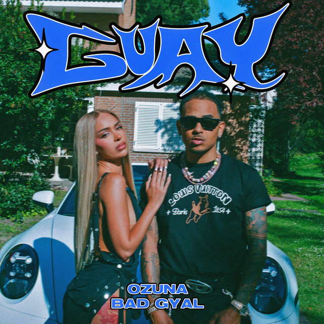
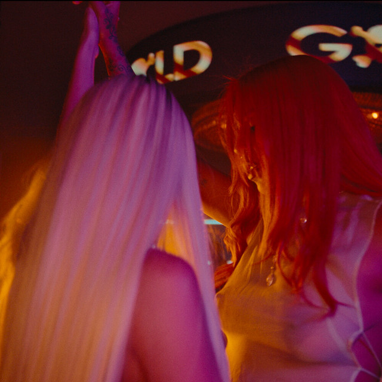
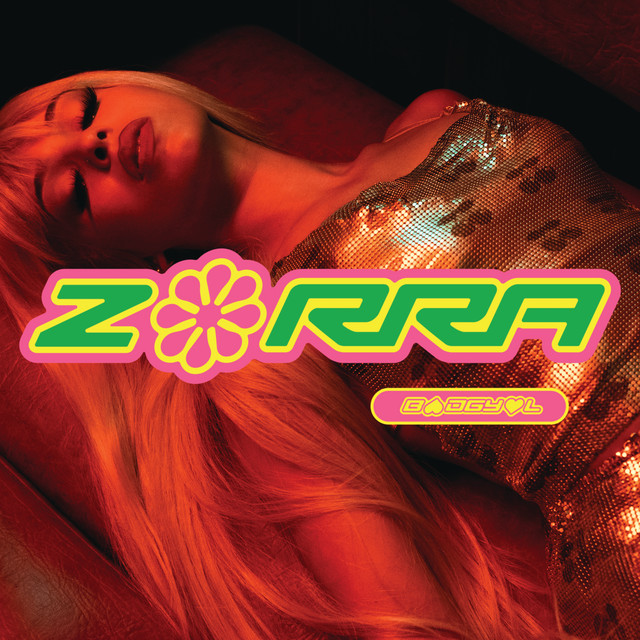
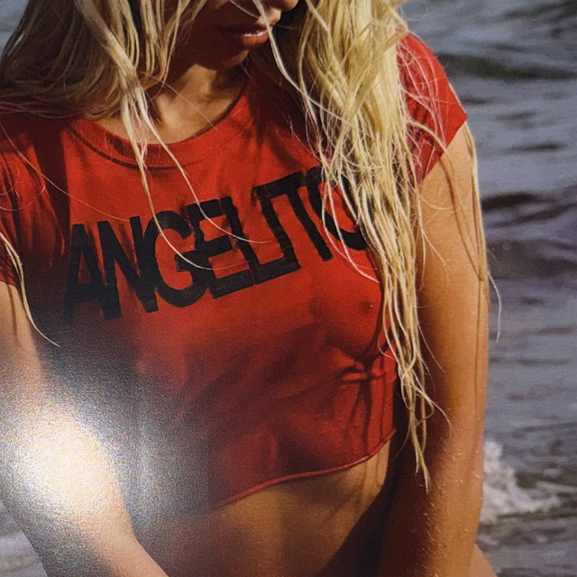
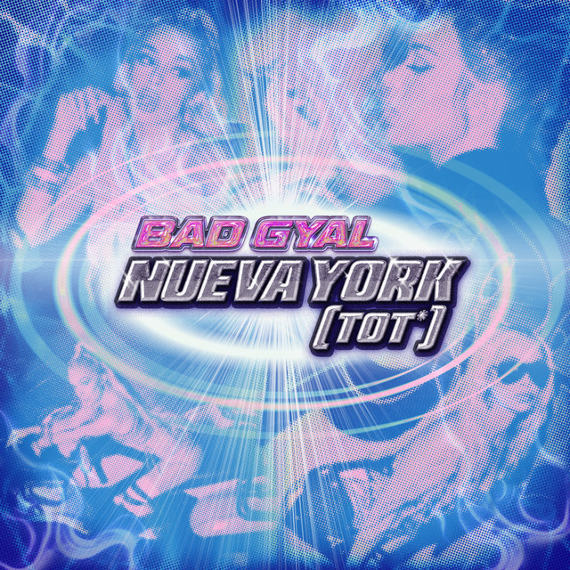

Alba Farelo i Solé (Vilassar de Mar, Barcelona; 7 de marzo de 1997), conocida artísticamente como Bad Gyal, es una cantautora, productora, DJ, y modelo española. Saltó a la fama en 2016 con su primer sencillo "Pai", una adaptación de la canción "Work" de Rihanna. Desde entonces ha desarrollado su carrera musical caracterizada por fusionar géneros como el dancehall, el reguetón y el trap, además de ser de las primeras artistas españolas en dar a conocer y profesionalizar estos estilos de música en el país.
Slow Wine mixtape es el primer album lanzado por Bad Gyal el cual se lanzo en el año 2016. Este album fue la clave para que Badgyal se diera a conocer en la escena musical.
Dicho album tiene varios temazos como: Fiebre, Mercadona, D WAY DO YOU ME, entre otros. Este album mezcla canciones de tipo dancehall y reguetón.
Aparte de que es uno de los mas conocidos por gran parte de oyentes de Bad Gyal no es que sea tampoco de los mas escuchados. La Cancion com mas escuchas de este album hasta el momento esw "Fiebre" que cuanta con mas de 200.000.000 de escuchas en Spotify.
Canciones Destacadas
Estas son algunas de las canciones más destacadas del álbum Slow Wine Mixtype:
Fiebre
Reproducciones: 243.215.260 Fuente: Spotify
D WAY do you me
Reproducciones: 2.723.297 Fuente: Spotify
Mercadona
Reproducciones: 20.842.519 Fuente: Spotify
Worldwide Angel
Worldwide Angel
Worldwide Angel es el segundo álbum de estudio de Bad Gyal, lanzado en 2018. Este álbum consolidó su estilo único y su capacidad para mezclar géneros como el dancehall, el reguetón y el pop.
Este album incluye temazos reconocidos como: "Yo sigo igual", "Candela" e "Internationally".
Canciones Destacadas
Estas son algunas de las canciones más destacadas del álbum Worldwide Angel:
Yo sigo igual
Reproducciones: 12.087.069 Fuente: Spotify
Candela
Reproducciones: 16.479.221 Fuente: Spotify
Internationally
Reproducciones: 22.308.245 reproducciones.
Warm up
Warm Up es el tercer album que lanzo Bad Gyal en el año 2021, incluyendo temazos como : Zorra Remix con la colaboracion de Rauw Alejandro, 44 con Rema, y Blin Blin con Juanka.
Canciones Destacadas
Blin Blin
Reproducciones: 101.588.583 Fuente: Spotify
44
Reproducciones: 39.334.973 Fuente: Spotify
Zorra Remix
Reproducciones: 45.543.882 Fuente: Spotify
La Joia
La Joia es el segundo álbum de estudio de Bad Gyal, lanzado en 2021. El álbum incluye una mezcla de reguetón, dancehall y pop, y ha sido aclamado por la crítica por su producción innovadora y las letras empoderadoras de Bad Gyal. La cancion mas escuchada de este album es "Chulo .pt 2" con la colaborAacion de "Young Miko" y de "Tokisha" y cuenta con mas de 400 millones de reproducciones en Spotify.
Canciones Destacadas
Estas son algunas de las canciones más destacadas de este álbum:
Chulo .pt 2
Reproducciones: 433.855.396 Fuente: Spotify
Perdio este Culo
Reproducciones: 58.873.966 Fuente: Spotify
Otra vez mas
Reproducciones: 16.994.411 Fuente: Spotify
Mi Lova
Reproducciones: 56.439.091 Fuente: Spotify
Singles
Bad Gyal ha lanzado varios singles a lo largo de su carrera, algunos de los cuales han sido muy exitosos. A continuación, se presentan algunos de sus singles más populares:
2AM
Guay -Ft Ozuna

Duro de Verdad .pt 2

Zorra

Angelito

Nueva York

De todos los singles mis dos preferidos son: Guay con Ozuna y Duro de Verdad .pt 2 con los sufridos.